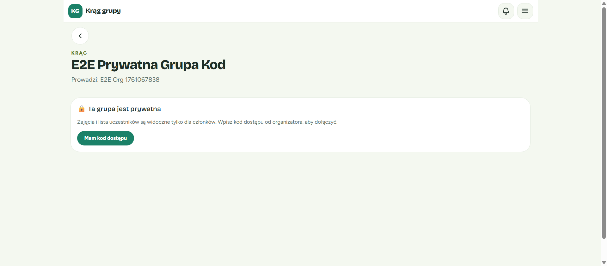
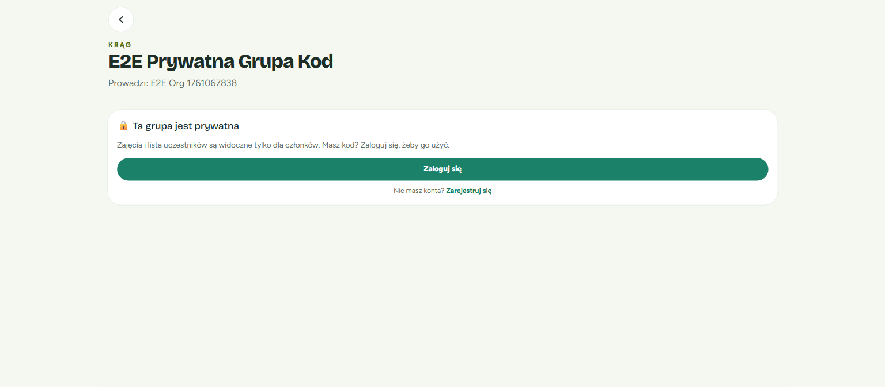
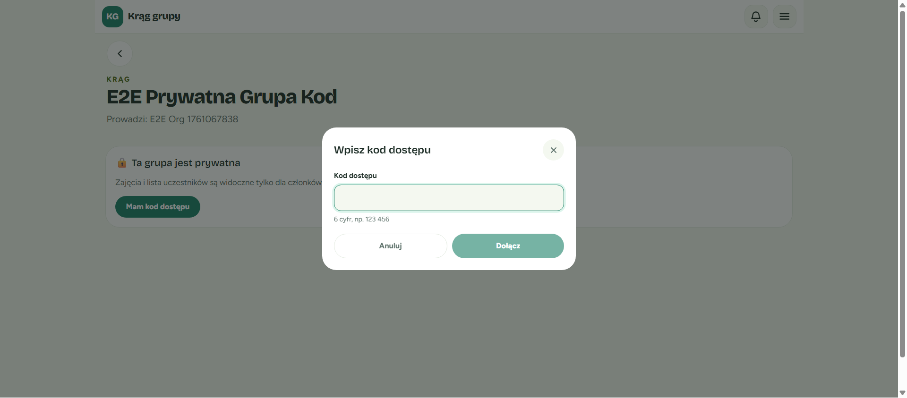
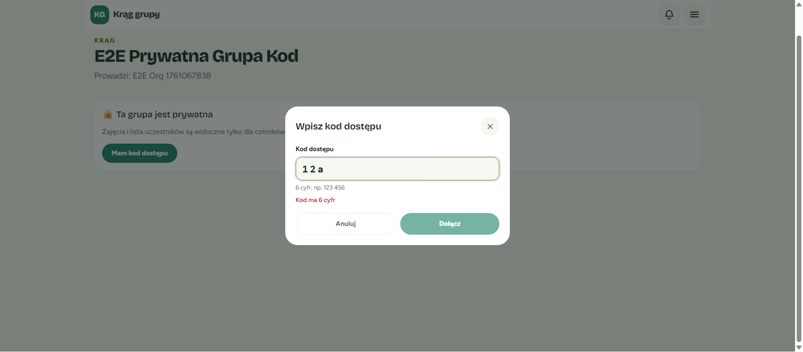
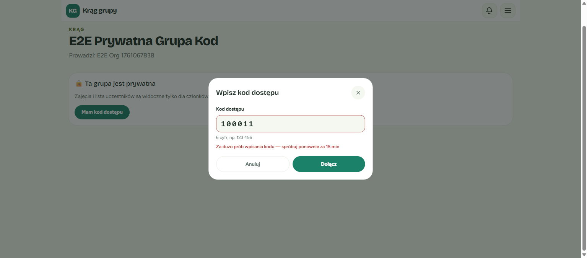
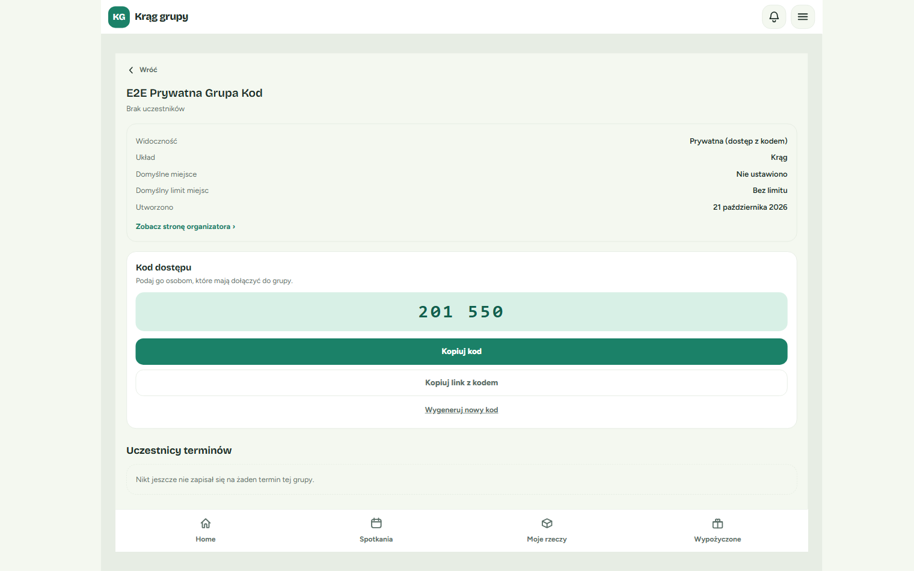
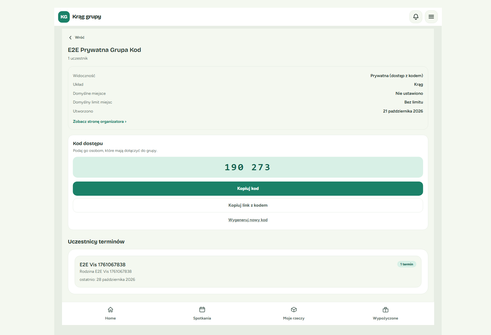
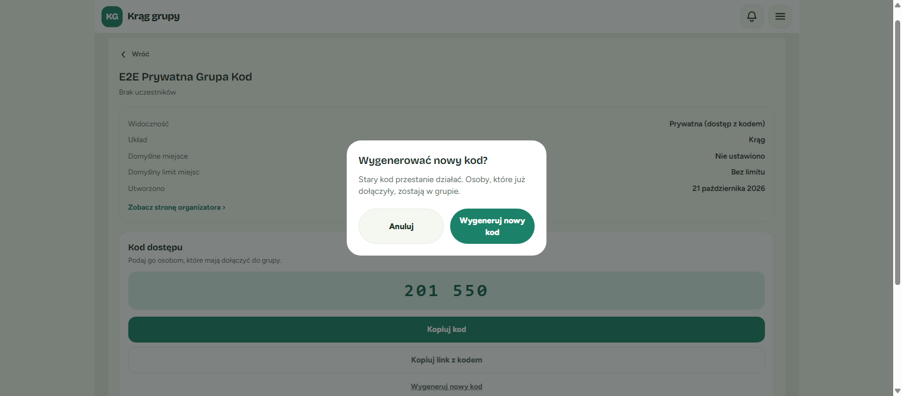

Per-screen comparison
✓ Match · screen:private-gate-logged-in

- Layout: back button, "KRĄG" eyebrow, title, "Prowadzi: …", single gate card. Matches.
- Copy "Wpisz kod dostępu od organizatora, aby dołączyć." Matches verbatim.
- Primary action "Mam kod dostępu" replaces "Poproś o dostęp".
⚠ Minor deviation · screen:private-gate-anonymous

- Layout and both copy variants match ("Zaloguj się, aby wpisać kod dostępu." / "Masz kod? Zaloguj się, żeby go użyć.").
- Deviation: "Nie masz konta? Zarejestruj się" instead of "Załóż konto". This is the documented exception (audit L10); no action.
✓ Match · screen:join-by-code-sheet



- ModalSheet "Wpisz kod dostępu" + ✕; label → monospace input → hint "6 cyfr, np. 123 456" → alert → Anuluj / Dołącz. Matches.
- States verified: empty (Dołącz disabled), invalid "Kod ma 6 cyfr", 409, 429. Busy ("Dołączanie…") and "Inny błąd" not captured.
⚠ Minor deviation · screen:group-details-join-code-card


- Details card → JoinCodeCard → "Uczestnicy terminów"; card content and button hierarchy match.
- Deviation: copy buttons lack the "⧉" glyph. The inline role=status line serves as the local toast. Cosmetic.
- Not captured: the "no upcoming term" variant.
✓ Match · screen:regenerate-confirm

- Centered alertdialog; "Wygenerować nowy kod?" + body copy verbatim; Anuluj / Wygeneruj nowy kod side by side. Matches.
⚠ Minor deviation · screen:stepper-done-private

- Success copy, JoinCodeCard, "Przejdź do publicznej strony →", "Gotowe". Order and copy match.
- Deviations: no "⧉" glyph; the "Stwórz publiczną wizytówkę" CTA is absent because the test organizer already had an organization (the CTA is conditional in CreateGroupStepper.tsx).